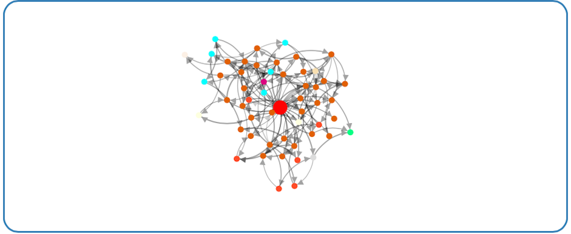

<div id="home">
  <h2><i class="icon-bookmark"></i> About Bridges</h2>
      {% include about.md %}
  <h2><i class="icon-bookmark"></i> More Information</h2>
  <ul id="blog-posts" class="posts">
    {% for post in site.categories.main %}
        <li><!--<span>{{ post.date | date_to_string }} &raquo;</span>--> <span>&raquo;</span> <a href="{{ post.url }}">{{ post.title }}</a></li>
    {% endfor %}
    <li><span>&raquo;</span> <a href="http://bridgesuncc.github.io/bridges_faq/faq.html">User Guide and Code Examples</a></li>
    <h3>For developers:</h3>
    <li><span>&raquo;</span> <a href="http://bridgesuncc.github.io/doc/java-api/current/">JAVA API Reference</a></li>
    <li><span>&raquo;</span> <a href="http://bridgesuncc.github.io/doc/cxx-api/current/">C++ API Reference</a></li>
    <li><span>&raquo;</span> <a href="https://github.com/krs-world/bridges">Client source code</a></li>
    <li><span>&raquo;</span> <a href="https://github.com/stevemacn/bridgesAPI">Server source code</a></li>
  </ul>

<hr/>
</div>
<script src="https://ajax.googleapis.com/ajax/libs/jquery/1.4.4/jquery.min.js" type="text/javascript" charset="utf-8"></script>

<section class="container">
    <div id="slidercontainer">
        <div id="slider">
            <a target="_blank" href="http://bridges-cs.herokuapp.com/assignments/11.0/mmehedin@uncc.edu"></a>
            <a href="http://bridges-cs.herokuapp.com/assignments/16.0/mmehedin@uncc.edu" target="_blank"></a>
            <a href="http://bridges-cs.herokuapp.com/assignments/1/kalpathi60" target="_blank"></a>
            <a href="http://bridges-cs.herokuapp.com/assignments/73.0/mmehedin@uncc.edu" target="_blank"></a>
        </div>
    </div>
    <footer>
    </footer>
</section>

</div>
